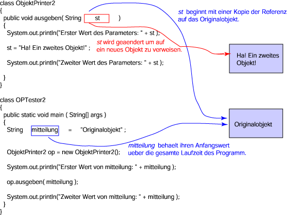

Antwort:
Erster Wert von mitteilung: Originalobjekt Erster Wert des Parameters: Originalobjekt Zweiter Wert des Parameters: Ha! Ein zweites Objekt! Zweiter Wert von mitteilung: Originalobjekt
Erster Wert von mitteilung: Originalobjekt Erster Wert des Parameters: Originalobjekt Zweiter Wert des Parameters: Ha! Ein zweites Objekt! Zweiter Wert von mitteilung: Originalobjekt

In dem überarbeiteten Programm erzeugt die ausgeben() Methode
ein neues Objekt und stellt eine Referenz auf das Objekt in
den Parameter st.
Solange Sie wissen was Sie tun, ist das OK.
Jede Linienfarbe in der Abbildung repräsentiert einen
anderen Referenzwert.
Die Abbildung zeigt wie die ausgeben() Methode den
Wert des formalen Parameters ändert, so dass er auf ein zweites Objekt verweist.
Weder das Originalobjekt noch die Variable mitteilung der
main() Methode wurden geändert.
Die ausgeben() Methode kann ihren formalen Parameter genau wie jede andere
Variable verwenden, inklusive den Wert ändern, den er enthält.
Könnte ausgeben() die Referenz auf das ursprüngliche Stringobjekt verwenden, um den Inhalt dieses Objekts zu ändern?